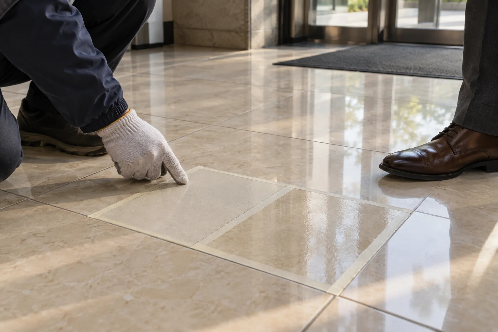
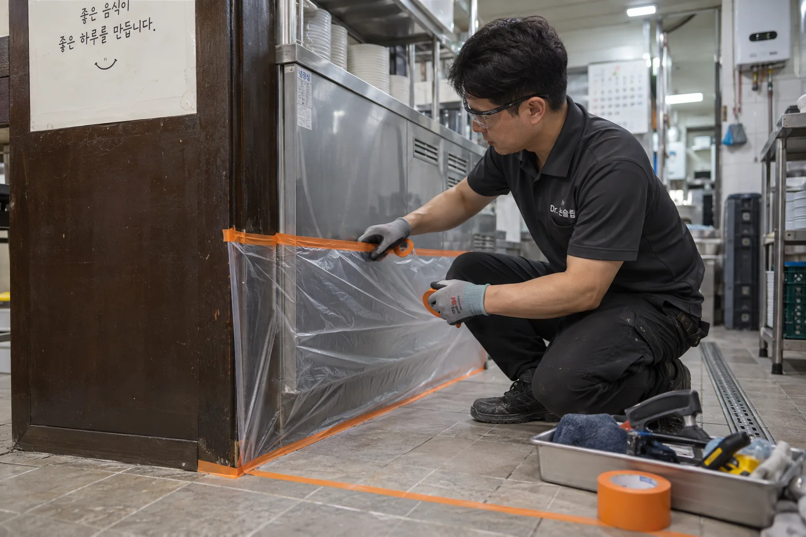

안전·품질
고령자 안전사고의
78.8%는 낙상사고
한국소비자원이 집계한 2024년 실제 위해발생 고령자 안전사고 15,063건 중 낙상사고는 11,866건입니다.
미끄럼방지 시공은 젖은 타일·석재의 미끄럼 저항을 개선하는 바닥 관리 방법입니다. 이용 환경의 물기·배수·오염 관리도 함께 확인합니다.
- 미끄러짐·넘어짐
- 67.6%10,178건
- 추락
- 11.2%1,688건
- 기타 사고
- 21.2%3,197건
65세 이상 · 실제 위해가 발생한 CISS 접수 사례 15,063건.
낙상은 미끄러짐·넘어짐과 추락을 합한 분류입니다.
출처: 한국소비자원, 2024년 고령자 위해정보 동향 분석, 표 3-1 (2025.7.)

무료 샘플 시공 후
고객이 직접 효과 확인
실제 바닥의 작은 구역에 시공합니다. 처리한 구역과 기존 구역을 고객과 함께 비교하고, 미끄럼 변화와 색·광택을 확인한 뒤 본 시공을 결정합니다.
- 미끄럼 변화 비교 같은 물기와 확인 방식으로 두 구역 비교
- 기존 바닥 외관 확인 색상·광택·표면 촉감 확인
- 시공 범위와 견적 결정 고객이 확인한 결과와 현장 여건 반영
담당자가 현장에 맞는 비교 방법을 안내합니다.
기관 제출용 계측 자료는
별도 출장 측정 협의
관공서·기업에서 마찰계수 측정 자료가 필요하면 요구 항목을 알려주세요.
제조사 측 현장 측정 지원 가능 여부와 별도 출장·측정 비용을 사전에 확인해 안내합니다.
- 기본 제공
- 무료 방문 실측·샘플 시공과 현장 효과 비교
- 별도 협의
- 장비를 이용한 현장 마찰계수 측정 및 필요한 자료
- 비용 사전 안내
- 출장·측정 비용과 자료 제공 범위를 확인한 뒤 진행
마찰계수는 바닥과 접촉면 사이의 미끄럼 저항을 나타내는 지표입니다. 시험법·물기·접촉 재료 등 측정 조건을 함께 확인합니다.
VOC·중금속·처리수
안전성 시험자료 확인
안전 관련 시험자료를 갖춘 전용 약제로 시공합니다.
- 휘발성유기화합물
- 시험 대상 VOC 항목, 검출한계 미만.벤젠·톨루엔·자일렌 등 시험 대상 항목의 결과를 확인했습니다.
- 중금속
- 시험 대상 중금속 항목, 검출한계 미만.납·카드뮴 등 시험 대상 항목의 결과를 확인했습니다.
- 시공 후 처리수
- 약제뿐 아니라 처리수의 시험자료까지.방류수 시험 결과와 세척·회수 기준을 함께 살핍니다.
자료에 맞게 약제를 취급하고, 꼼꼼한 세척과 회수로 마무리합니다.
이용 시점과 재질에 맞는 청소 방법까지 안내합니다.

원바닥 외관 확인·
주변 시설 보양
시공할 바닥만 처리하도록 주변 금속 마감과 집기·벽면을 보양합니다. 작업 구역도 이용자의 동선에서 분리합니다.
- 원바닥 외관
- 색·광택·표면 마감은 작은 샘플에서 먼저 비교합니다.
- 주변 보양
- 약제가 닿지 않아야 하는 시설과 마감을 보호합니다.
- 세척과 회수
- 작업 후 약제와 오염 잔여물까지 정리하고 이용을 안내합니다.
시공 후 12개월
무상 A/S 보장
시공 완료 후 관리 방법과 점검 사항을 안내하고 12개월 무상 A/S를 제공합니다.
적용 범위와 조건은 시공 전에 안내합니다.
작업 사진은 확인 과정과 시공 방법을 설명하기 위한 브랜드 이미지입니다.